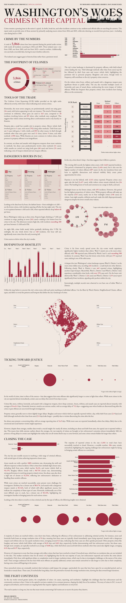

Washington's Woes
A crime dataset, read as a newspaper front page.

The Problem
For the DataDNA Dataset Challenge (March 2025), the brief was to take a raw, unevenly-covered crime dataset — 3,866 incidents, mostly from 2024-2025, with sparse outlier records reaching back to 1989 — and turn it into something that actually answers the questions a resident or official would ask. These include where crime is concentrated, when it happens, and how well the city is actually resolving it.
A handful of records from 1989, 2005, and 2022 sit disconnected from the 2024-2025 core of the dataset, and the analysis explicitly frames those as gaps in historical record-keeping rather than genuine long-term trends. Folding isolated decades-old outliers into a "trend" chart would have manufactured a pattern that isn't actually there.
The Four Lenses
Each lens answers a different version of "what does this data mean," and the first one alone reframes how the other three should be read.
Cross-referenced against weapon method on a UCR-ranked ladder from homicide down to arson. The pattern here cuts against an assumption that violent crime means firearms by default: robbery is the offense most associated with guns (163 cases), but the single largest firearm-adjacent count in the entire table belongs to Theft (Other), which recorded far more "other methods" (1,590) than gun or knife involvement combined. Firearms concentrate in a handful of violent-crime categories rather than spreading evenly across the severity ladder.
Shift-level patterns down to the hour.
Ward-and-District mapping.
How long each offense type takes to resolve.
The Outcome
Property crime dominates the city's footprint at 3,446 of 3,866 cases (89.1%). Evening hours see the most crime overall (1,663 incidents), but midnight — despite having the fewest incidents of any shift (691) — sees the highest proportional share of violent crime, with nearly one in four midnight incidents being violent. Ward 5 is the single most affected ward, driven by District 5 alone at 626 incidents.
Broken down by shift, evening carries 1,456 property crimes against 207 violent; daytime runs close behind at 1,457 property crimes but far fewer violent incidents (56) than either evening or midnight; midnight's 533 property crimes pair with 158 violent ones. Ward-level concentration follows a similarly uneven pattern: Wards 2 and 1 each cross 500 incidents alongside Ward 5's 788, while Ward 3 sees just 275 — nearly a 3-to-1 gap between the city's most and least affected wards.
On resolution: reporting-to-clearance time varies sharply by offense — arson, robbery, and assault are reported almost instantly (0-0.2 days on average), while homicide cases average 712 days. Sex abuse cases sit in an uncomfortable middle ground: a 24.9-day average reporting delay, long enough to suggest real barriers to timely reporting rather than pure investigative complexity. Yet homicide still closes at 83.33%, and arson closes at a perfect 100%. Citywide, 92.7% of all reported crimes were resolved.
This project earned the Runner-Up award in the DataDNA Dataset Challenge, March 2025.
Midnight, despite having the fewest incidents of any shift, sees the highest proportional share of violent crime."